Architecture and design
Visual artefacts produced during the design of the platform: C4 model views of the runtime topology, the UML domain model, activity and use-case diagrams, and the wireframes used during stakeholder review.
C4 model
The system is described at three levels of zoom following the C4 model. Source: c4.dsl (Structurizr DSL).
System landscape
The platform sits between the curators and the consortium's external NLP services. The frontend and the optional backend together constitute the system under design; the upstream NLP services are external dependencies abstracted behind adapters.
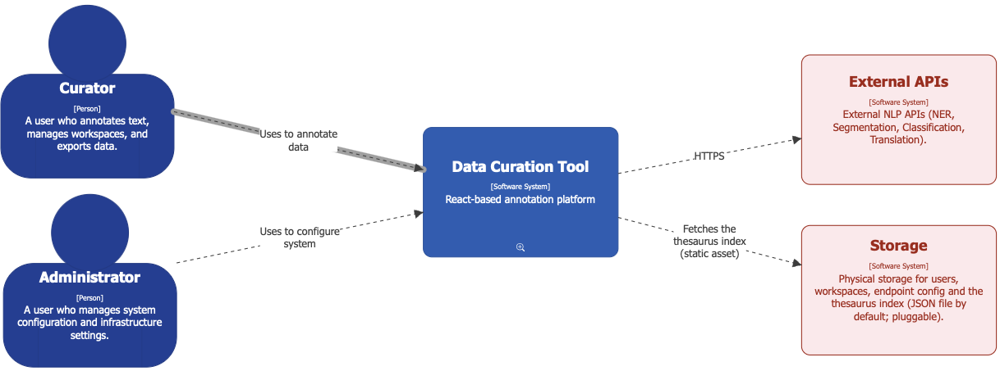
Containers
Two containers ship with the platform: the React single-page application and the optional Node/Express server. The server's persistence dimension is configurable: a JSON file adapter for development, a Postgres adapter for production.
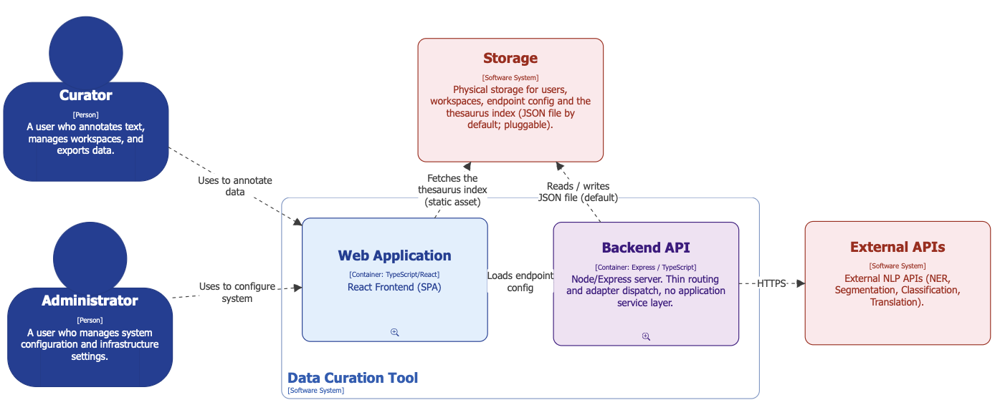
Frontend components
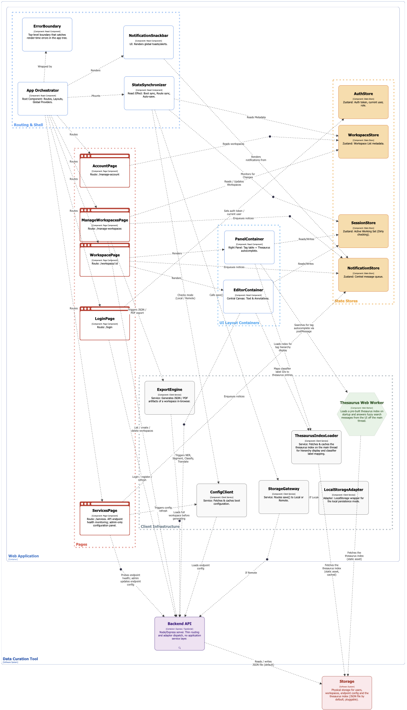
Backend components
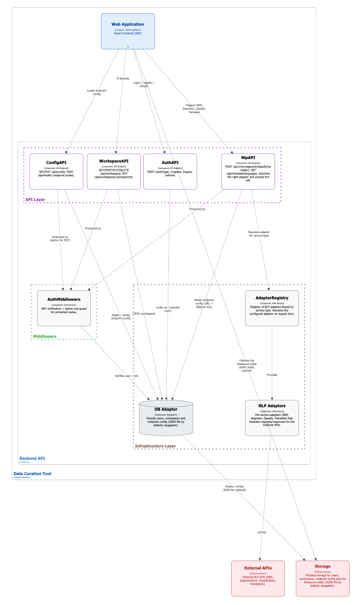
Domain model
UML model of the curation entities (Workspace, Segment, NerSpan, TranslationDTO, TagItem) and their relationships. Source: domain.uml (PlantUML).
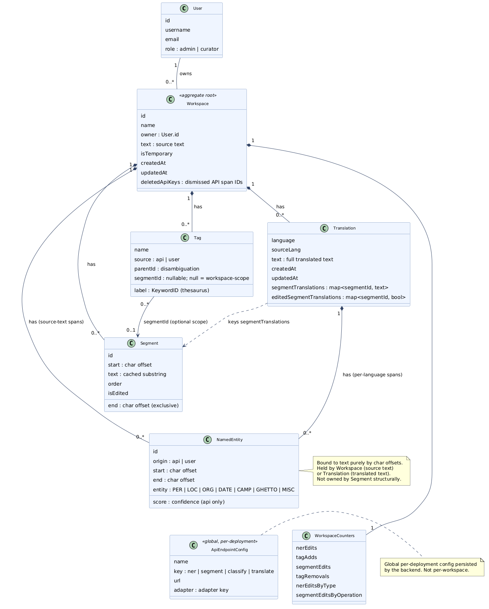
Use-case diagram
Top-level overview of the nineteen use cases grouped by functional area. The detailed specifications are in the use-case specifications page. Source: use-case.uml (PlantUML).
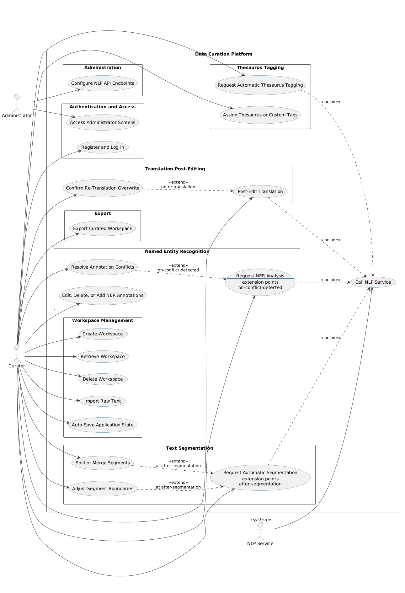
Activity diagrams
Editing flow
Curator-driven actions: importing text, segmentation review, NER edits, tagging. Source: activity-edit.uml.
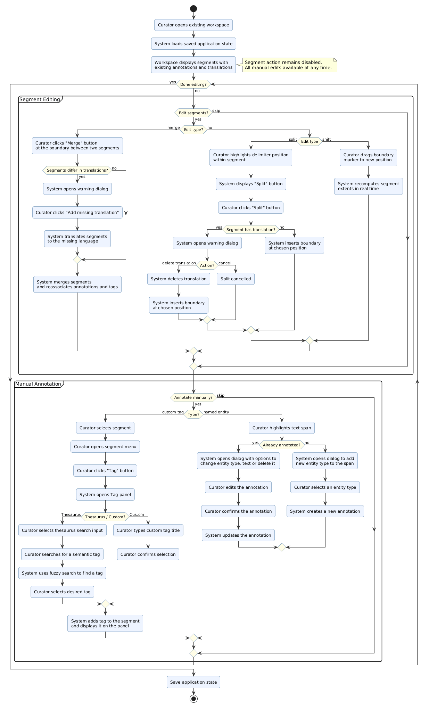
NLP pipeline
System-driven flow: dispatching to the configured NLP service, normalisation through the adapter, conflict resolution against existing spans. Source: activity_nlp.uml.
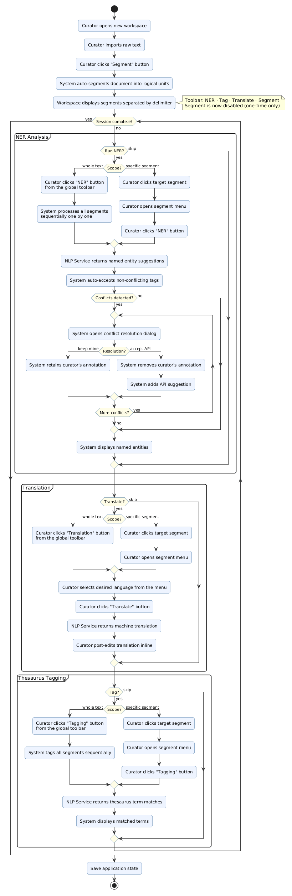
Wireframes
Low-fidelity sketches used to align with consortium reviewers before implementation.
Workspace list
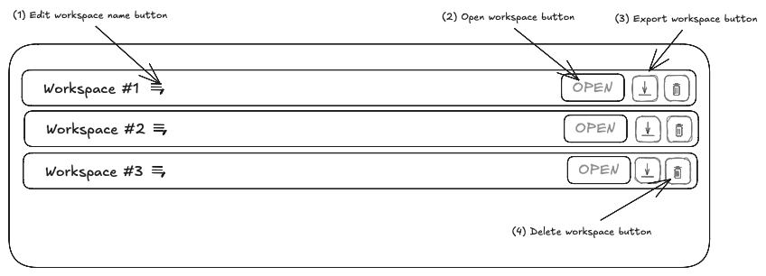
Editor (main view)
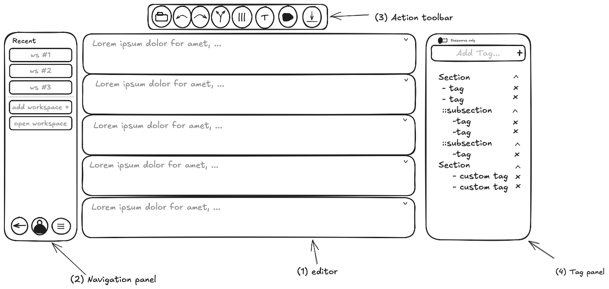
Segment-level editing
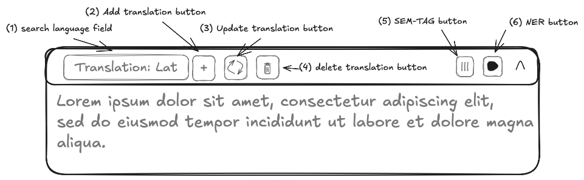
Conflict resolution dialog
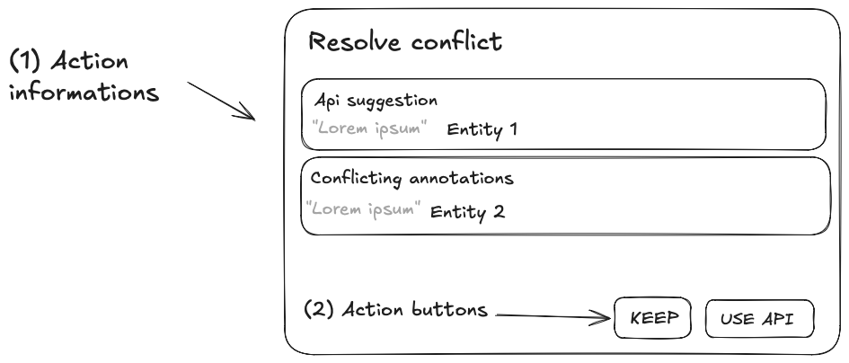
Admin services panel
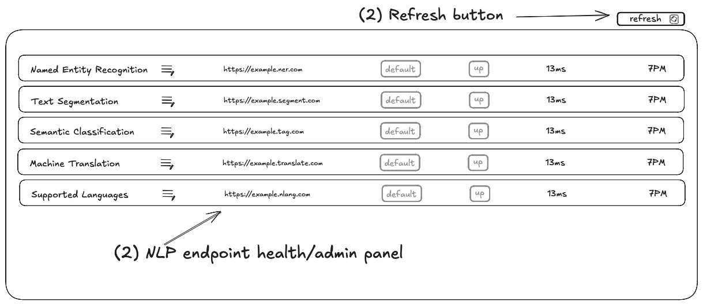